Italy’s terrestrial border unwinds for a total length of 1,913 km, mostly following the line of the natural watershed across the entire Alpine range. On rocky ridges and stable terrains, its contour is materialised through 8,043 boundary stones and metal plaques. On the snowfields and perennial glaciers that shape the watershed at higher altitudes, where permanent physical markers would be impossible, the only trace of the border is preserved in the official maps held by Istituto Geografico Militare, Italy’s national cartographic agency.
The border’s current path derives to a great extent from the provisions of the Treaty of Paris, signed by Italy in 1947 after the end of World War II. Yet its long history reflects many of the political developments of modern Europe. While the border between Italy and Switzerland has not undergone any major changes since the late 18th century, the one between Italy and Austria was extensively redrawn by the battles of World War I. The French border was altered by a number of minor territorial cessions at the end of the 1940s, following the Italian defeat; and the frontier with Slovenia is in fact the same that separated Italy and Yugoslavia after 1954 and the beginning of the Cold War.
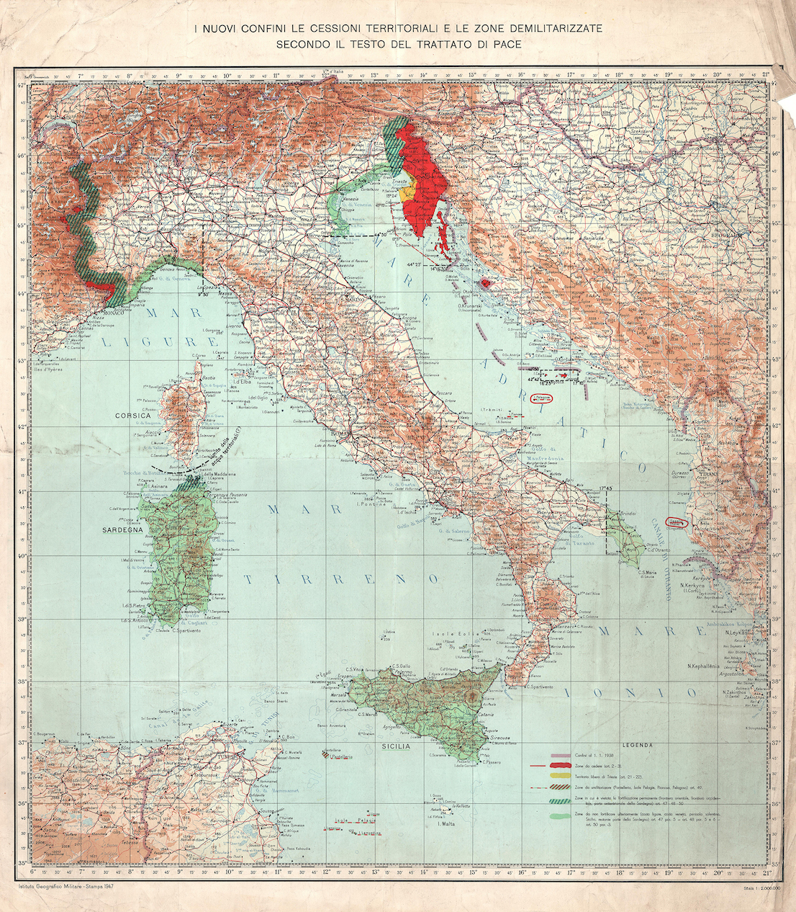
The need for an accurate measurement of the national border has constantly driven the progress of technologies for spatial representation, from the early aerial surveys of the 1920s, to the creation of trigonometric networks, to the final transition to digital co-ordinates of high-accuracy GPS measurements.
Up until the end of the 20th century, these lines determined a broad spectrum of international relations: from the friendly ties with France and Austria (NATO allies), to mediation with the economic and political enclave of Switzerland, to the tightly-controlled frontier with Yugoslavia—the southernmost part of the Iron Curtain. Today this scenario is practically a forgotten landscape. Almost every physical trace of the borders seems to have faded away.
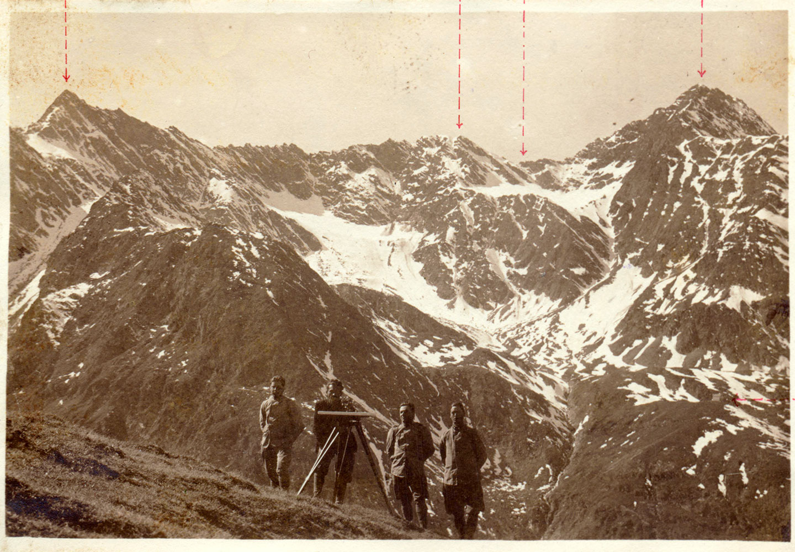
Since 1850, Alpine glaciers have undergone a 50% decrease of their overall extension. Furthermore, the rate of shrinkage tripled between the 1970s and 2000. Cyclical variations of the ice surface have accumulated into permanent shifts and alterations of the glacial geometry, causing significant drifts of the watershed line, As a result, the coinciding national borders have shifted too. This has made it necessary to renegotiate the terms of the boundaries between Italy and the adjoining states.
Shifts in the watershed line can take place both along the vertical axis (when a glacier thins or disappears, allowing the emergence of rocky ridges underneath that become the new and definitive dividing line), and along the surface (slippage and retreat of the glacial basins that result in a modification of its course).
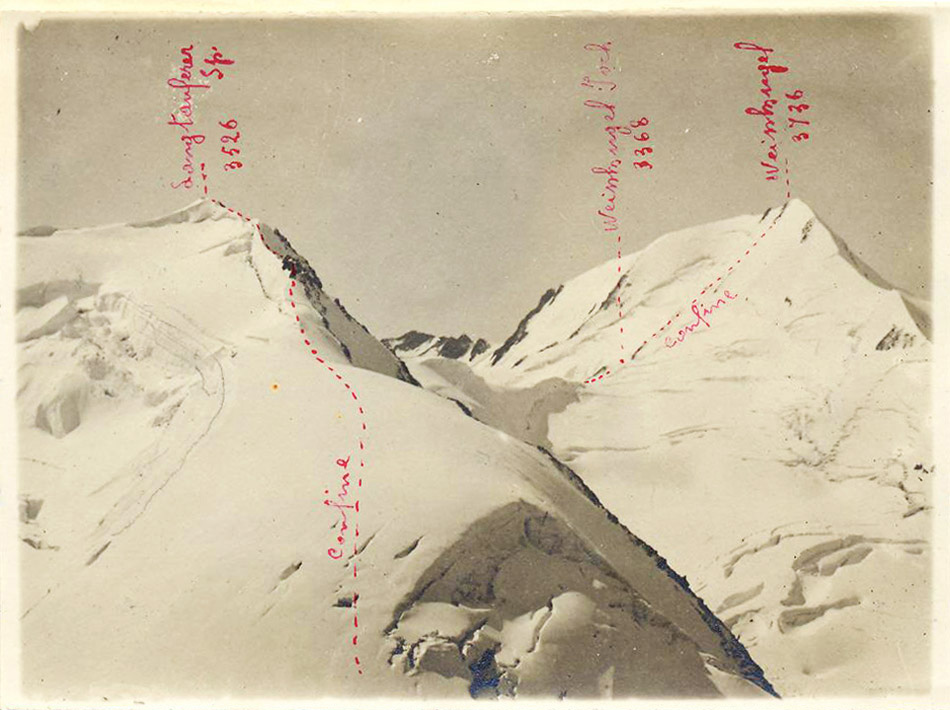
In the 1990s, observations by the Istituto Geografico Militare started to acknowledge the problematic uncertainty of the limits between Italy and its adjacent countries. A new definition of “moving border” was eventually enacted into law, by means of a 2006 agreement between the governments of Italy and Austria, and of a 2009 agreement with with Switzerland. Since 2008, the Istituto Geografico Militare has been carrying out high-altitude surveying campaigns every two years, with the goal of detecting any new shifts in the borderline and of updating the official state maps.
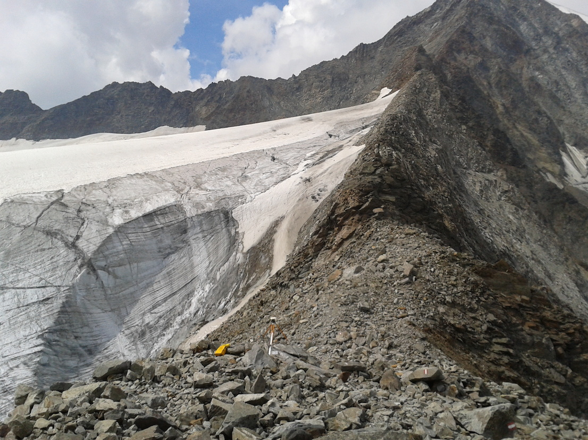
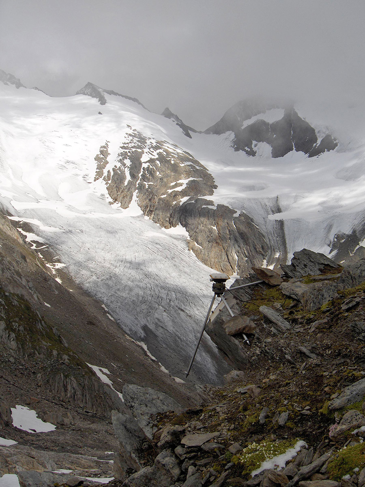
The Italian Limes project started in 2014 with the survey of a 1-km section of the Italy–Austria border at the foot of Mount Similaun, in the Ötztal Alps. A network of five GPS probes was installed on the ice sheet of the Grafferner glacier, following a significant shift in the border measured by the Istituto Geografico Militare. The sensors tracked the movements of the line throughout the spring and summer, until they were buried by new-fallen snow in late September 2014.
On April 2, 2016, a new expedition was carried out in order to measure the same stretch of the border with newly designed instruments. A new set of sensors was installed, under the guidance of the Italian Glaciological Committee (CGI) and of the National Institute of Oceanography and of Experimental Geophysics (OGS).
The measuring units were arranged into a grid that covers a 1-square-kilometer area across the watershed line. Throughout the summer, they transmitted real-time data for a precise description of the border’s shifts in the three dimensions. Additional measurements were done on the site during the expedition, and a geophysical survey of the glacier was performed. These data, besides feeding an artistic installation, will help to better understand the dynamics of climate change on the Alps.
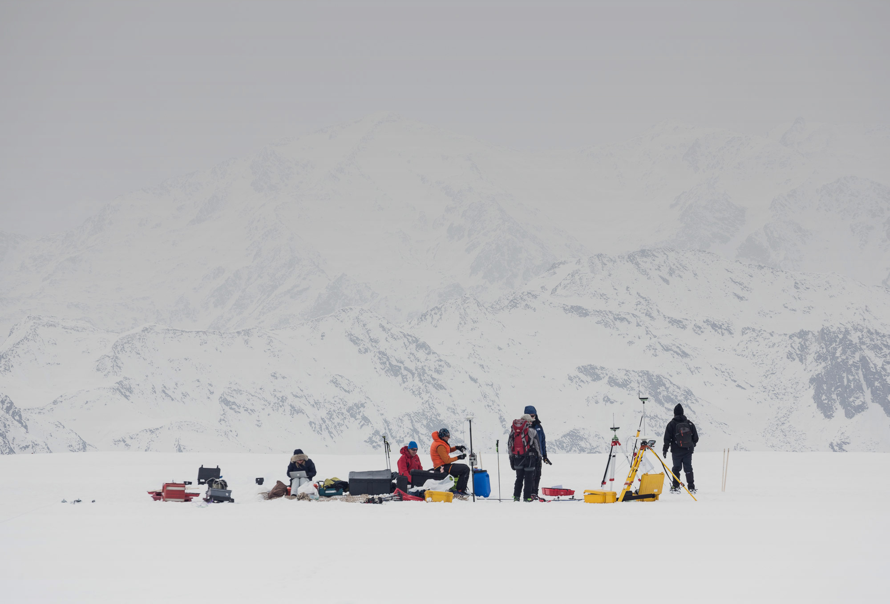
The measuring units installed on the glacier are solar-powered devices based on an Arduino microcontroller. They have been designed to record precise changes in altitude as wells as a range of other environmental data, useful to understand the weather conditions on the glacier. The sensors were tested at -30°C inside the facilities of EuroCold Laboratories at the University of Milano-Bicocca.
The data are processed remotely in order to monitor any changes in the glacier surface, detecting in real time the evolution of the watershed geometry. Data is recorded internally and transmitted every two hours through a GPRS/GSM network provided by TIM. It is then translated into a live, automated representation of the movement of the border by means of a drawing machine.
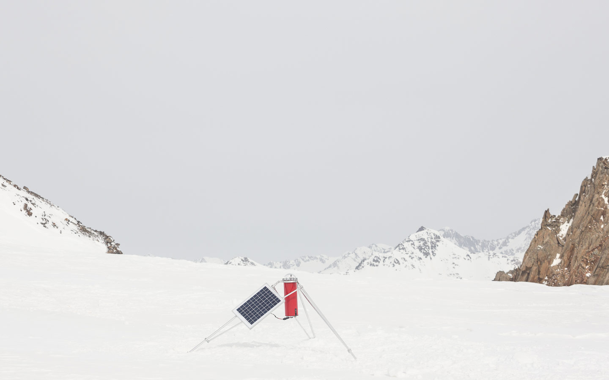
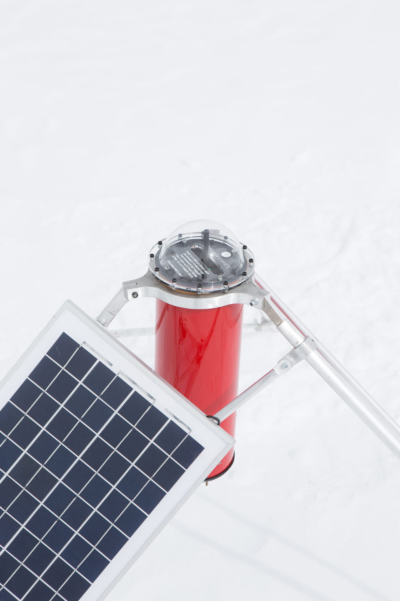
The Italian Limes installation is composed of three main elements: a raised-relief model of the case-study Grafferner glacier; a selection of unpublished documents and maps from the archives of Istituto Geografico Militare; a drawing machine that allows for the real-time representation of the Austrian-Italian border.
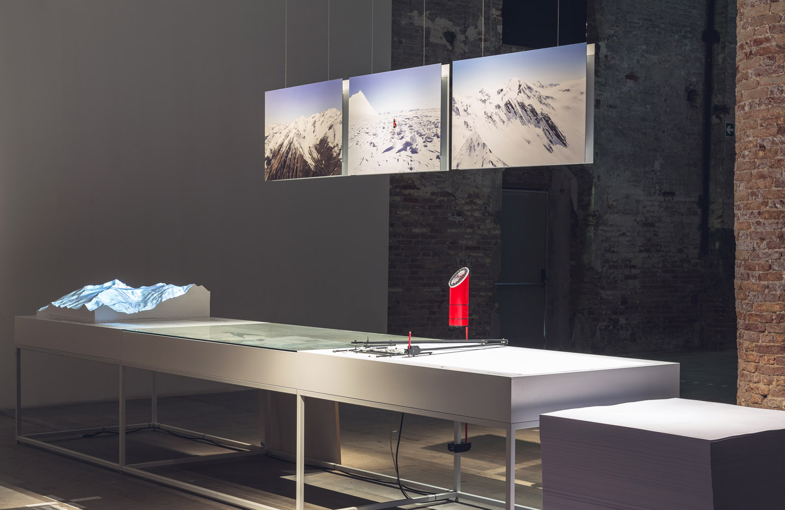
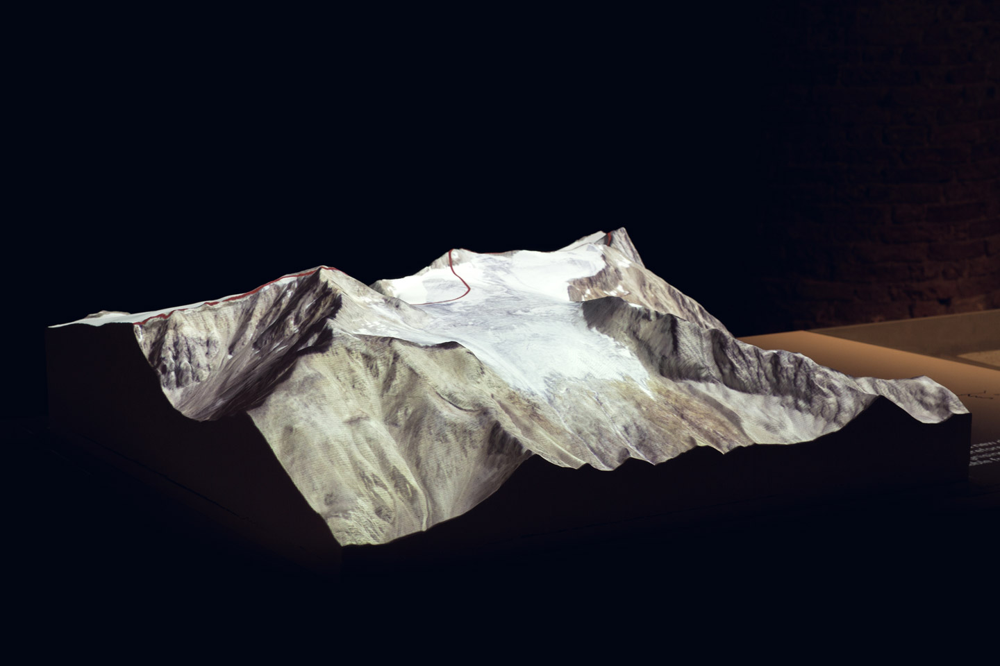
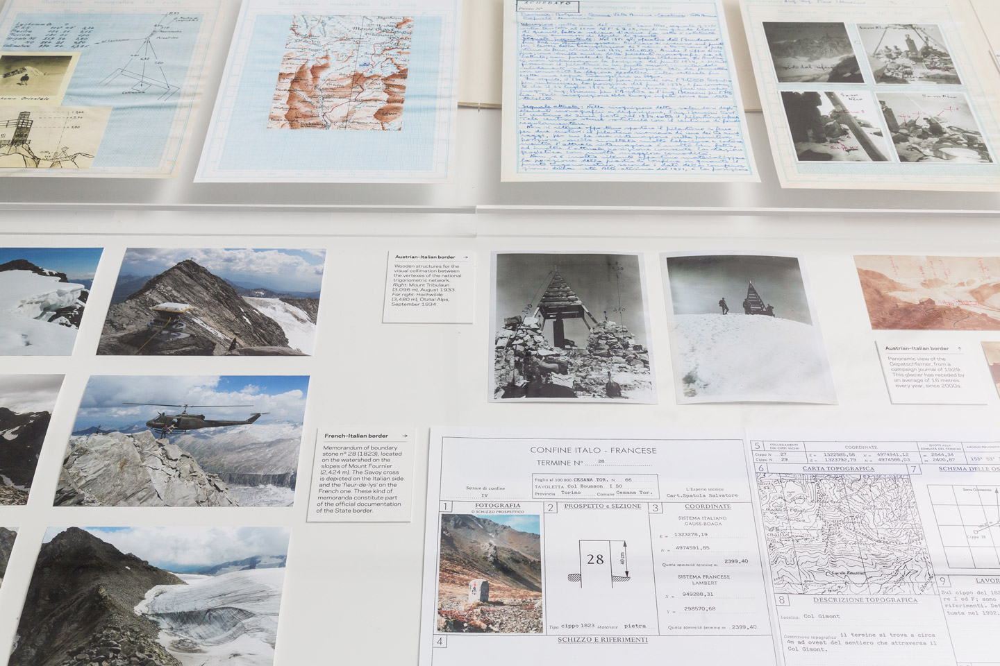
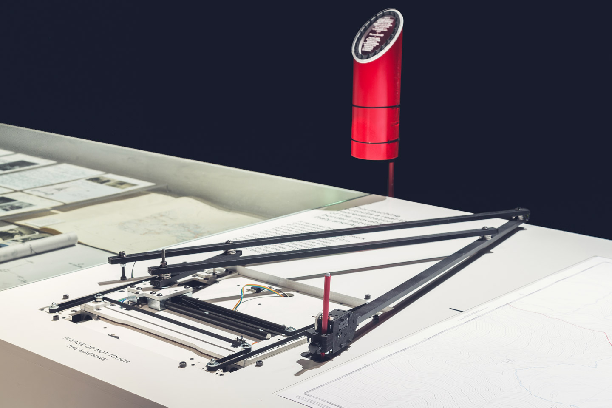